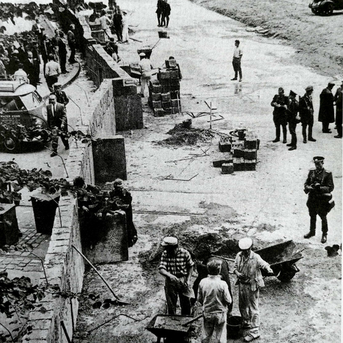
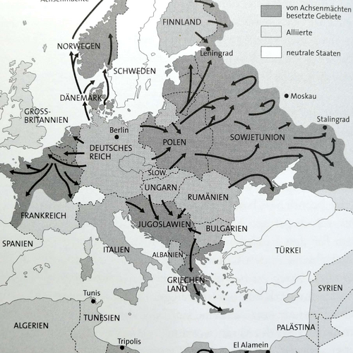
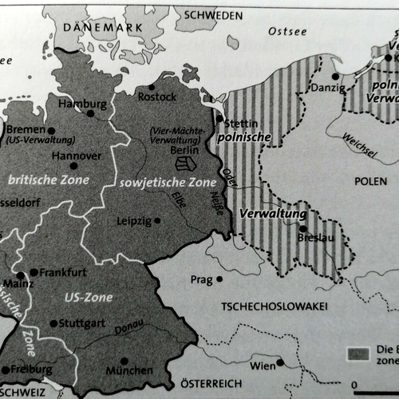
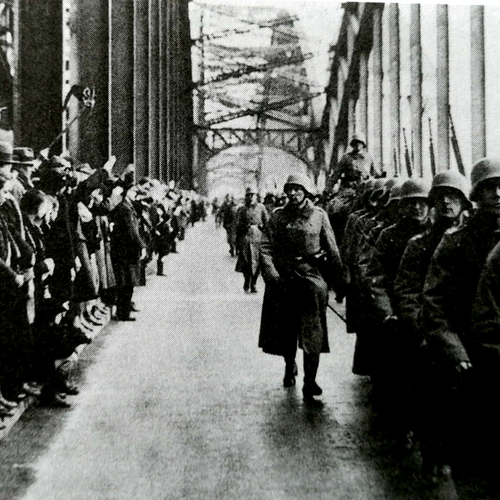
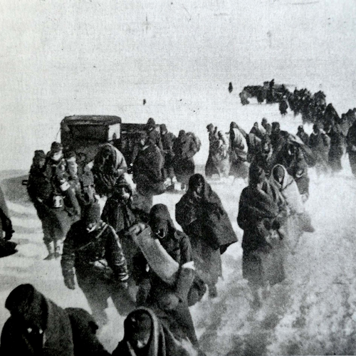
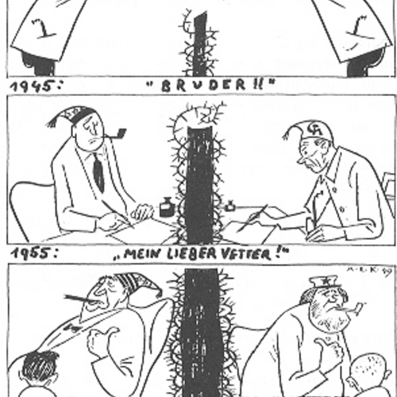

10 Politische Geschichte Deutschlands
| Themen | Neuere deutsche Geschichte: Weltkrieg und Mauerfall |
| Lernziele | Sie sind in der Lage, die neuere deutsche Geschichte in groben Zügen nachzuzeichnen. Sie sind sich inner-deutscher Identitätskonflikte bewusst und können historische Gründe dafür erläutern. |
Hören Sie die folgenden zwei Lieder. Wie finden Sie die Stücke? Beschreiben Sie. Was für Lieder könnten das sein? Hören Sie noch einmal zusammen mit dem Arbeitsblatt.
|
|
Zwei Deutschlands? Wie kam das? Bringen Sie die folgenden Bilder und Daten erst einmal in die richtige Reihenfolge. Arbeiten Sie in kleinen Gruppen.
1933 - 1933 - 1936 - 1942 - 1943 - 1945 - 1945 - 1945 - 1949 - 1961 - 1961 - 1961-1989
| A | B | C | |
|---|---|---|---|
| 1 |  |
 | |
| 2 |  |  | |
| 3 |  |  | |
| 4 |  |
Lösung
4A 1933, 4B 1933, 3A 1936, 2A 1942, 3C 1943, 4C 1945, 2B 1945, 2C 1945, 1A 1949, 1C 1961, 3B 1961, 1B 1961-1989
Ordnen Sie dann den Bildern die richtige Beschreibung zu.
| Jahr | Ereignis |
|---|---|
| a. | Am 13. August wird in Berlin eine Mauer zwischen DDR und BRD gebaut. |
| b. | Gründung der ostdeutschen Deutschen Demokratischen Rebulik (DDR) im Oktober. Die westdeutschen Bundesrepublik Deutschland (BRD) war im Mai. |
| c. | Deutsche Soldaten marschieren ins entmilitarisierte Rheinland ein. |
| d. | Nach dem verlorenen Krieg liegt Deutschland in Trümmern. |
| e. | Der “Führer” Adolf Hitler schüttelt Hindenburg die Hand am Tag seiner Machtergreifung. |
| f. | Ein DDR-Volkspolizist springt über einen Zaun und flieht nach West-Berlin kurz vor dem Bau der Mauer. |
| g. | Eine Mauer zwischen BRD und DDR teilt Deutschland über viele Jahre. |
| h. | Nach dem Zweiten Weltkrieg teilen die Alliierten Deutschland in vier Besatzungszonen ein. |
| i. | “Judenboykott” der Nazis am 1. April: “Kauft nicht bei Juden” |
| j. | Im russischen Stalingrad erleidet die deutsche Wehrmacht ihre erste vernichtende Niederlade. |
| k. | Das Symbol der Nazis, das Hakenkreuz, wird gesprengt. |
| l. | Die Ausdehnung des deutschen Reiches im Sommer dieses Jahres |
Über Jahrzehnte wird das ehemalige Deutschland von einer Mauer geteilt. Schon 1949 malt ein Zeichner folgende Bilder. Was bemerken Sie? Sprechen Sie in der Gruppe und sammeln Sie dann Gedanken im Plenum.

Die Bilder zeigen …
Meiner Meinung nach ist damit gemeint, dass …
Das soll vermutlich bedeuten, dass …
1989 fällt die Mauer und Deutschland wird wiedervereinigt. Lesen Sie hierzu diesen Text und bearbeiten Sie die Aufgaben 2 bis 4 zusammen mit Ihrer Partnerin. Sammeln Sie dann Antworten im Plenum.
Sehen Sie sich abschließend das Video zum Mauerfall 1989 an.
Denken Sie noch einmal an die heutige Stunde. Wie fühlen Sie sich? Formulieren Sie einen Satz.
- Lesen Sie in Tatsachen über Deutschland die Seiten 36-37 über Erinnerungskultur in Deutschland.